En cas de canicule, préservez votre santé et celle des personnes fragiles qui vous entourent.
[En savoir plus] sur la politique "Santé et développement" de la Métropole
Les risques
L'exposition à de fortes chaleurs est une agression pour l'organisme. On risque une déshydratation, l'aggravation d'une maladie chronique ou un coup de chaleur. Certains symptômes doivent alerter :
des crampes musculaires au niveau des bras, des jambes, du ventre…
plus grave, un épuisement peut se traduire par des étourdissements, une faiblesse, une insomnie inhabituelle…
Qui peut être touché ?
Les travailleurs manuels exposés à la chaleur, les nourrissons, les personnes âgées, les sportifs, les personnes atteintes de certaines maladies chroniques sont particulièrement sensibles aux coups de chaleur.
Toute personne logée dans une habitation mal adaptée à la chaleur : logements en dernier étage, logements n'abritant ni ndroit frais ni pièce climatisée…
Un risque grave : le coup de chaleur
L'adaptation à la chaleur induite par exposition à un environnement chaud demande du temps, au moins une semaine. Les effets de la chaleur surviennent lorsque le corps n'arrive plus à contrôler sa température qui augmente alors rapidement :
Niveau 1 : Coup de soleil - Rougeurs et douleurs, dans les cas graves gonflements, vésicules, fièvre et maux de tête.
Niveau 2 : Crampes - Spasmes douloureux et forte transpiration.
Niveau 3 : Épuisement - Forte transpiration, faiblesse, froideur et pâleur de la peau, évanouissements et vomissements.
Niveau 4 : Coup de chaleur -Température élevée, peau sèche et chaude, confusion, perte de connaissance.
Quelques conseils
Protégez-vous de la chaleur
- Fermez les volets et les rideaux des façades exposées au soleil.
- Maintenez les fenêtres fermées tant que la température extérieure est supérieure à la température intérieure. Ouvrez-les la nuit, en provoquant des courants d'air.
- Évitez les sorties et les activités aux heures les plus chaudes (généralement entre 12 et 16h) et plus encore les activités physiques : sport, jardinage, bricolage…
- Si vous devez sortir, restez à l'ombre. Portez un chapeau, des vêtements légers (coton) et amples, de couleur claire. Emportez avec vous une bouteille d'eau.
Rafraîchissez-vous
- Restez à l'intérieur de votre domicile dans les pièces les plus fraîches.
- Si vous ne disposez pas d'une pièce fraîche chez vous, rendez-vous et restez au moins deux heures dans des endroits climatisés ou, à défaut, dans des lieux ombragés ou frais : supermarchés, cinémas, musées… à proximité de votre domicile.
- Prenez régulièrement dans la journée des douches et/ou humidifiez-vous le corps plusieurs fois par jour à l'aide d'un brumisateur ou d'un gant de toilette.
Buvez et continuez à manger
- Buvez le plus possible, même sans soif : eau, jus de fruit (pour les adultes, boire entre 1,5 à 2 litres par jour sauf contre-indications médicales ; pour l'enfant, il est recommandé d'apporter des boissons à hauteur de 100ml par kilo et par jour sauf contre-indications médicales).
- Ne consommez pas d'alcool.
- Mangez comme d'habitude au besoin en fractionnant les repas, de préférence des fruits et des légumes (sauf en cas de diarrhée).